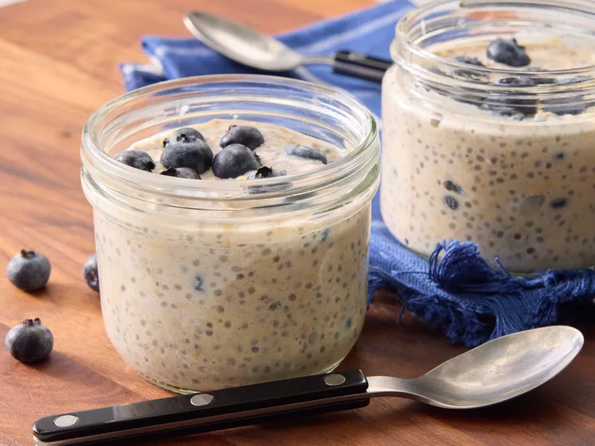

Overnight Oats

Description
This overnight oat recipe is the perfect make-ahead breakfast recipe. You can prepare the oats in jars and store in the refrigerator for up to one week.
Though this recipe calls for blueberries, you can use almost any fruit. Bananas, peaches, or any variety of berries work best. You can add-in your favorite toppings, fruit, or nuts.
Ingredients
- 1/3 cup milk
- 1/4 cup Greek yogurt
- 1/4 cup rolled oats
- 2 teaspoons honey
- 2 teaspoons chia seeds
- 1/4 teaspoon ground cinnamon or more to taste
- 1/4 cup fresh blue berries
Steps
- Combine milk, yogurt, oats, honey, chia seeds and cinnamon on a 1/2 pint jat with a lid; cover and shake until combined.
- Fold in blue berries.
- Cover and refrigerate for 8 hours overnight.
- Serve with your favourite toppings. Enjoy!